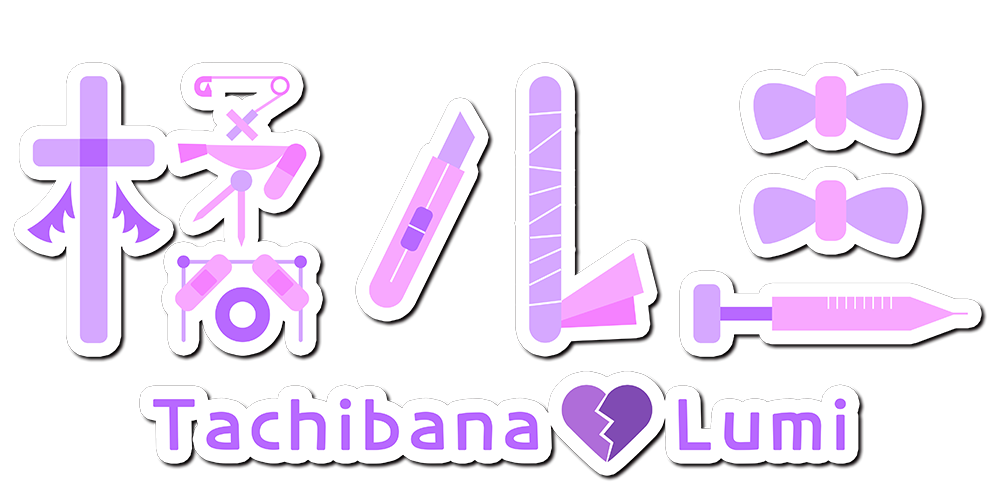

UTAU連続音ライブラリー

名前 : 橘ルミ(たちばな ルミ)
年齢 : 実年齢よりとても若く見える(にじゅう...っさいだから...あぅぅ...＞＜)
身長 : 150cm(ルミちゃんの一方的な主張)
性格 : ちょいメンヘラ
一人称 : あたし
好きなもの : エナジードリンク、コーヒー、スイーツ
嫌いなもの : さびしさ、心の痛み、人に左の手首が見えること(絶対ダメッ！！)
心の痛みを抱いている少女。
お薬は処方薬以外は飲まない。
リスカも最近はやっていない。

litmus* - キャラクター原案/発音収録/管理者
Twitter
Youtube
Myoya - 音声提供(RVCモデル製作用データセット提供)
Twitter
Youtube
みたう - イラスト
Twitter
※このライブラリーはRVC(AIカバー)を使用して制作され、事前に音声提供のMyoyaさんとの協議を経て製作しました。

このライブラリーはOpenUtauでの利用をお勧めします。
一般UTAUとの互換性は確認しておりません。
勧奨レンダラー : moresampler
ダウンロードの際、ライブラリーの利用規約に同意するものとみなします。